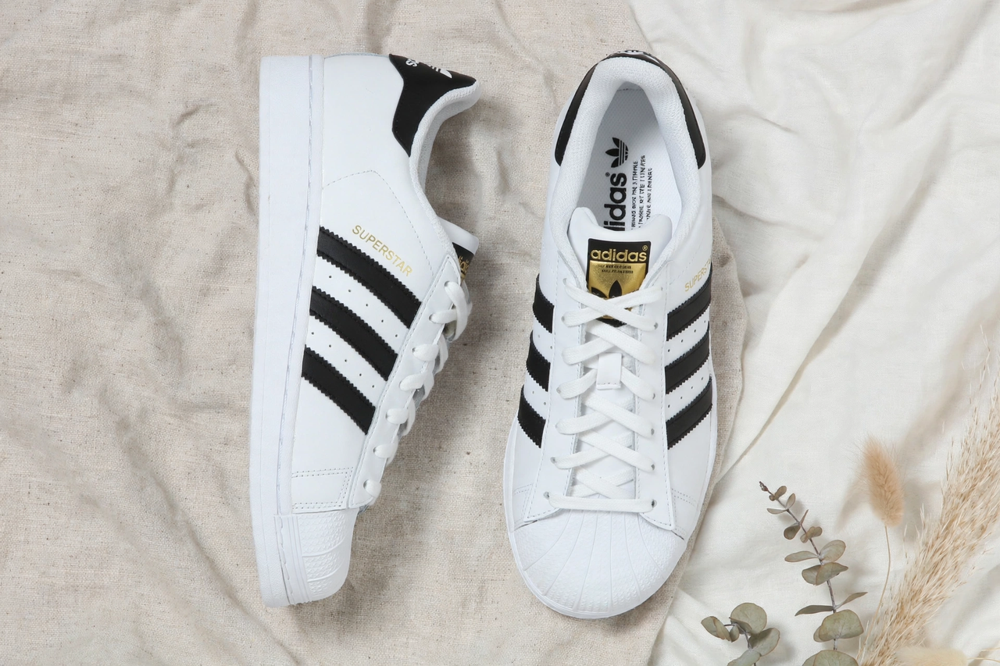

Adidas

Image: Adidas three-stripes logo and a pair of white Superstar trainers with black stripes | |
| Type | Public (Aktiengesellschaft) |
|---|---|
| Industry | Apparel, sporting goods |
| Founded | 18 August 1949 |
| Founder | Adolf Dassler |
| Headquarters | Herzogenaurach, Bavaria, Germany |
| Products | Athletic and casual footwear, apparel, accessories |
| Revenue | ~€21 billion (approx., 2023) |
| Employees | ~59,000 (approx.) |
| Website | adidas.com |
Adidas AG is a German multinational sportswear corporation headquartered in Herzogenaurach, Bavaria. It is the largest sportswear manufacturer in Europe and the second-largest in the world, after Nike, and is famous for its three parallel stripes.
History
Adolf "Adi" Dassler began making sports shoes with his brother Rudolf in their mother's laundry in the 1920s; their spikes were worn by Jesse Owens at the 1936 Berlin Olympics. After a bitter family feud, the brothers split in 1948: Rudolf founded Puma, and Adolf registered Adidas in 1949 — a name blending "Adi" and "Dassler". The two rival firms, based in the same small town, became a legendary business rivalry.
Adidas dominated football boots and track shoes for decades, supplied generations of World Cup balls, and expanded into apparel. After Dassler's death the company struggled, was sold in 1990, and revived under Robert Louis-Dreyfus in the 1990s. It acquired Reebok in 2006 (sold in 2021) and built a lucrative lifestyle business through Originals and collaborations, including the Yeezy line, which was terminated in 2022.
Products and sponsorships
Iconic products include the Stan Smith, Superstar and Samba trainers, Predator football boots, and Boost running shoes. Adidas sponsors leading football clubs and national teams, Olympic athletes, and is a long-standing FIFA partner supplying the World Cup match ball.
See also
Puma · Adolf Dassler · Dassler brothers feud · Stan Smith (shoe)